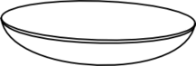
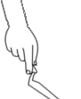
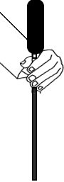
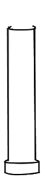
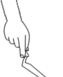
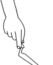

California Bearing Ratio value: is the ratio of force per unit area required to penetrate a soil mass with standard circular piston at the rate of 1.25 mm/min to that required for the corresponding penetration of a standard material.
STEP 1
Take sample, sieve it in 20mm IS sieve using mechanical shaker and then add measured quantity of water to it.


Volume of water taken (Total weight of soil(w) x 18%) = 900ml
STEP 2
Place the spacer disc over the base plate and coarse filter paper on it.
STEP 3
Fill one fifth of the mould with the soil sample. Each layer is compacted by giving 56 evenly distributed blows using a hammer of weight 4.89kg.


STEP 4
Remove base plate and invert the mould, then it is clamped to baseplate. Place the surcharge weight above the mould.
STEP 5
Specimen is placed in position on the testing machine along with the half weight and plunger. Load at penetration of 0.5, 1.0, 1.5, 2.0, 2.5, 3.0, 4.0, 5.0, 7.5, 10.0 and 12.5mm are noted.
Penetration (mm)
Proving ring reading
STEP 6
Observation and Calculations.
Diameter of plunger = 50mm
Area of plunger = 19.63cm2
Optimum moisture content = 15%
Load(kg) = Proving Ring Reading * 5⁄225*1000⁄9.81
Axial Load(kg/cm2) = Load(kg)⁄Area of plunger
**Enter key to be pressed to save values in table**
Penetration (mm)
Proving ring reading
Load in (kg)
Axial load in (kg/cm2)
STEP 7
Plot graph of Axial Load Vs Penetration.
Axial Load v/s Penetration
STEP 8
Observation and Results.
Unit standard load for 2.5mm = 70kg/m2
Unit standard load for 5mm = 105kg/m2
California Bearing Ratio CBR2.5mm = Load corresponding to 2.5mm penetration(Pr)⁄Standard load corresponding to 2.5mm penetration (Ps) * 100
=⁄70 * 100
California Bearing Ratio CBR5mm = Load corresponding to 5mm penetration(Pr)⁄Standard load corresponding to 5mm penetration (Ps) * 100
= ⁄105 * 100
Refer Graph
Need Hint?
Soil Type
CBR Range
Sandy Soil
5% - 40%
Fine grained Soil
5% - 15%
Since the soil is within the specified range it is suitable for pavement construction
Both ends of the pipe must be trimmed to ensure parallel faces.
Both ends of the pipe must be trimmed to ensure parallel faces.


 
